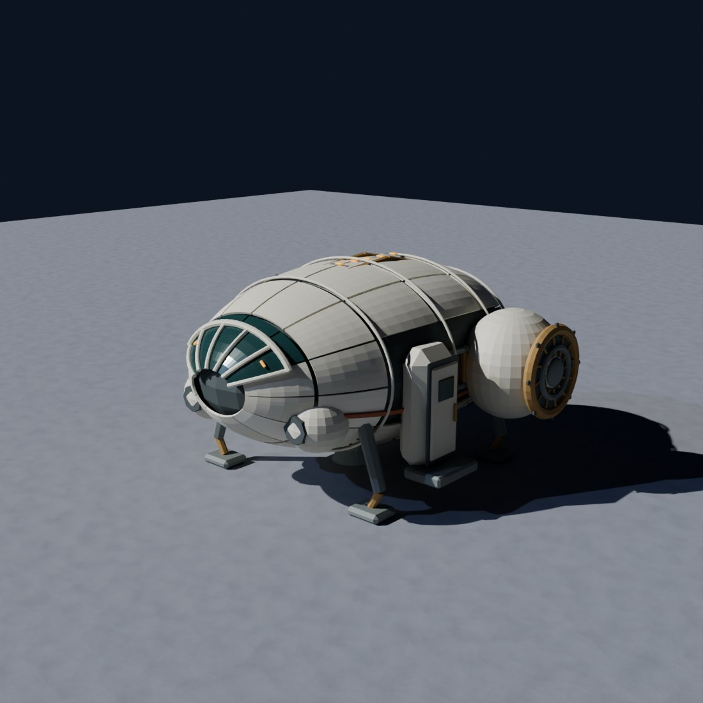
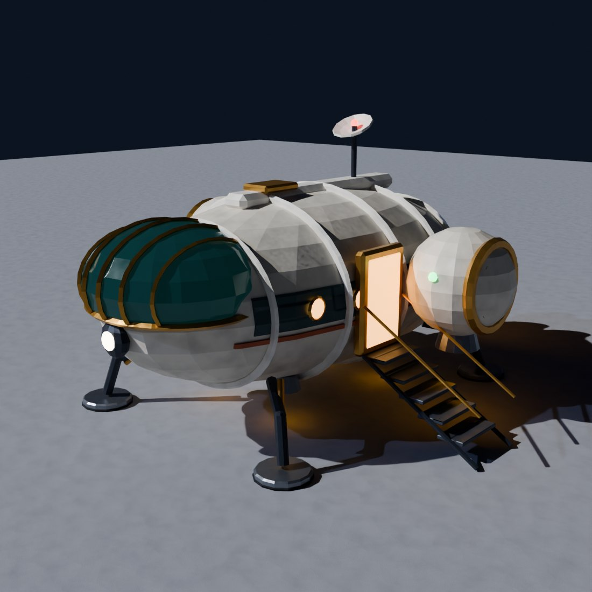
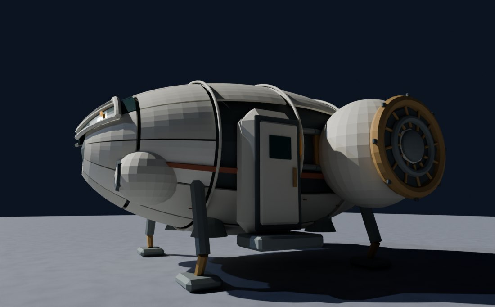
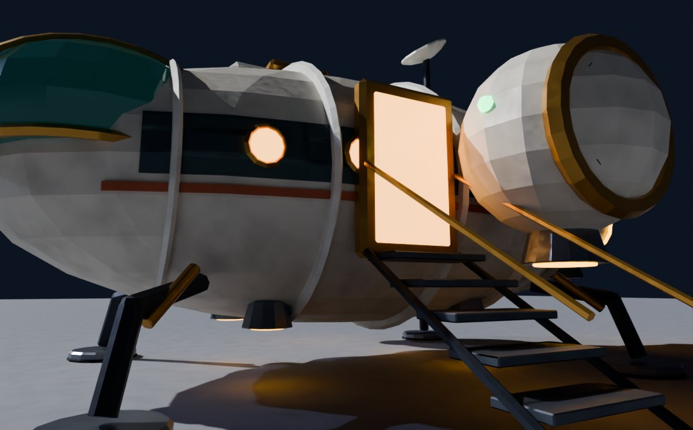

Aurora Mk 2
The USS Aurora already flies in the game: the cream, egg-shaped ferry that lands at the Moon port. Mk 2 is its upgrade. It keeps the shell, the rib hoops, the shoulder engines and the palette, and grows into a ship a crew can live on.


Same camera, same sun, same Earthlight. Tap "Spin it" to turn and zoom the real model.
From Abbie's eye height


Midjourney proofs
The four proofs (hero, turnaround, on the pad at Earthrise, and a cutaway) are being made on your PC. Round 2 of the model will be rebuilt against the one you pick.
What changed from Mk 1
Three sections, not one egg
Cockpit, cabin and cargo, marked by five rib hoops instead of three. Same ivory shell, dark window waist and terracotta pinstripe.
A canopy you can see the pilots through
Mk 1's small ribbed window becomes a wraparound green-glass canopy under brass arches, with a headlamp below.
Pods that glow when it's ready
The spherical shoulder pods keep their brass rims, and gain amber intake rings, turbine vanes and downward nozzles.
A lit door and a stair
Mk 1's airlock box becomes a brass doorway with warm light and a five-step stair with rails, sized for Abbie.
Ten portholes
Five warm portholes a side along the waist: the cabin RE-076 and the 20-crew Aurora starship scene now have windows to look out of.
Twin nozzles, a mast and a beacon
Two main nozzles and a cargo door at the back; a dorsal spine, hatch, sensor dish and red beacon on top.
How the ship tells you things
No HUD. Everything is diegetic: the characters can see it too.
- Ready to fly: the pod intakes and nozzles glow amber. When they're dark, the ship is asleep.
- Come aboard: the doorway is lit and the stair is down. Stair up and door dark means it's leaving.
- Which side is which: a red running light on the port pod and a green one on starboard, the way real ships say it.
- Someone's home: warm portholes. Talking to Earth: the mast beacon blinks.
What the Oracle's space games taught
The Oracle has 27 space games from your library. These are the lessons this ship uses.
Ships are made of parts
Every piece has a name and a job, so the game can animate one part and kids can ask for changes in words.
A ship you want to come home to
Handmade, cosy and a little wobbly. Warm light inside, a campfire feeling. That is why the door and portholes glow.
Bright, soft low poly
Pastel planets and chunky shapes read at any size. Mk 2 stays low poly and puts its detail in baked maps.
One palette per place
The sky, fog and grade come from the place. The Aurora's ivory, terracotta and brass stay fixed, so it pops on any world.
The inside is the game
Rooms you can see into make the crew's story. Next: a cutaway Mk 2 cabin from the RE-076 fit-out.
Ship building, kid-sized
Modules snap on. Mk 2's sections and pods are the first modules of a build-your-own Aurora.
The model
- Parts
- 116
- Triangles
- 12,806
- Size
- 8.7 × 9.8 × 5.5 m
- Mass
- 64 t
- Maps
- 2048 px
Built in Blender from a recipe on the Moon base kit: role materials (Metal_Ivory, Metal_Brass, Glass_Canopy, Lamp_Amber…), baked colour, roughness and normal maps, and mass per part in the model file. The feet sit inside the 12 m Moon landing pad's touchdown circle.
Next
Pick a Midjourney proof, then round 2 of the model against it. After that: the cutaway cabin, the ready and boarding states animated in the Moon port, and Mk 2 replacing Mk 1 on the VIP visit.